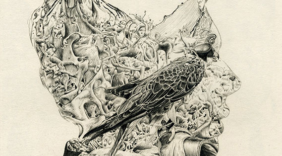
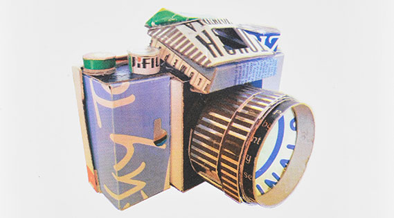

DESIGN
RELIVE
Utilising typography to convey the feeling of being underwater.
The image was captured on location in Victoria Park, Bath, flowing water from a small waterfall was used to naturally distort the hand lettered type. The final image was then refined in Photoshop.

ILLUSTRATION
THE OUTSIDER
The House of Illustration and Folio Society's competition, to illustrate ‘The Outsider’ by Albert Camus. The brief required the selection and illustration of three passages from the book.
A flood of anxiety cradles a hooded bird of prey; a killer is restrained and forced to heed the will of others.

DESIGN
HIDDEN
This piece was the culmination of a design and research project, centred around cold war espionage equipment, that were integrated into everyday objects, from watches to attaché cases. Made out of re-purposed materials, these models whilst being aesthetically pleasing, are also fully functioning pinhole cameras.